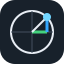

Seno
y = sin αsin α = 0
Angolo totale · gradi / radianti

Maria Vittoria Mazzoli · Classe 4ª B · Liceo Alessi
ESPLORA L’ANGOLO
15,5 oppure 15.5.15 30 0 oppure 15° 30′ 0″.2 significa 2 rad; 7pi/2 o 7/2pi significa 7π/2.sin α = 0
Angolo totale · gradi / radianti
cos α = 1
Angolo totale · gradi / radianti
tan α = 0
Tratteggio: asintoti · Freccia: fuori scala
Non definita
Tratteggio: asintoti · Freccia: fuori scala